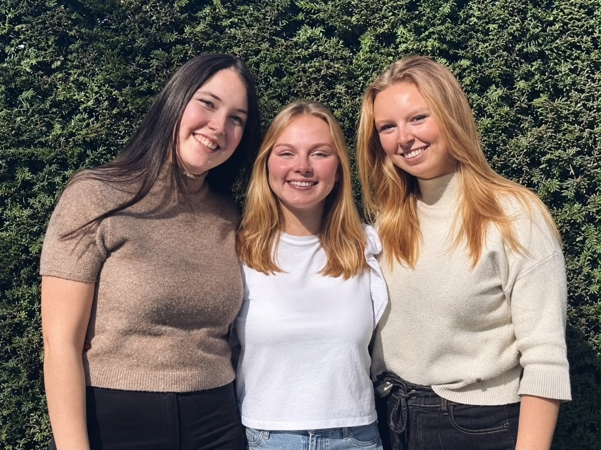

VANAF 1 DECEMBER
Een zoete kerst
Rood, groen en goud. Een klein lichtpuntje onder de boom.
EEN KLEIN CADEAU MET EEN GROOT HART
Voor je liefste mens. Voor een zomaar-moment.
Of stiekem voor jezelf. Een doosje vol snoep. Wij vullen het, jij maakt iemands dag.

 een beetje liefde, in een doosje
een beetje liefde, in een doosje KIES JOUW ZOETE GEBAAR
250 gram · € 6,00

500 gram · € 10,00
800 gram · € 13,00
Drie formaten, twee snoepmixen: gewoon of zonder gelatine. Altijd met een lint en een lief kaartje.
HET ZIT ’M IN DE KLEINE DINGEN
Een dankjewel. Een ik-denk-aan-je. Een verdiend verwenmoment. Je hebt geen grote gelegenheid nodig voor een Zoet Gebaar.
Voor wie is jouw doosje?Voor jou,
omdat jij
jij bent.
ELK SEIZOEN EEN ANDERE STRIK
Onze vertrouwde doosjes, met een lint en kaartje passend bij het moment. Van 1 december tot 31 mei.
VANAF 1 DECEMBER
Rood, groen en goud. Een klein lichtpuntje onder de boom.
FEBRUARI
Roze, rood en een lief kaartje. Voor iedereen die je lief is.
MAART – APRIL
Zachte pastels en een vrolijk paaskaartje. Om blij van te worden.
MEI · TOT 31 MEI
Rosé en goud, met een kaartje vol dankjewel. Onze laatste collectie.

DRIE STUDENTEN. ÉÉN ZOET IDEE.
Wij zijn Aylien, Shaunie en Aelis. Wat begon met een passie voor ondernemen, groeide uit tot onze studentenonderneming Zoet Gebaar. Van het eerste snoepje tot de laatste strik, we doen het samen, en met liefde.
Leer ons kennenEen klein doosje kan heel veel zeggen.
Vind jouw zoete gebaar